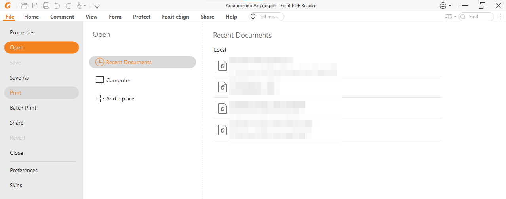
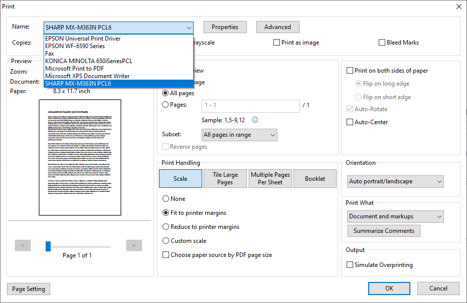
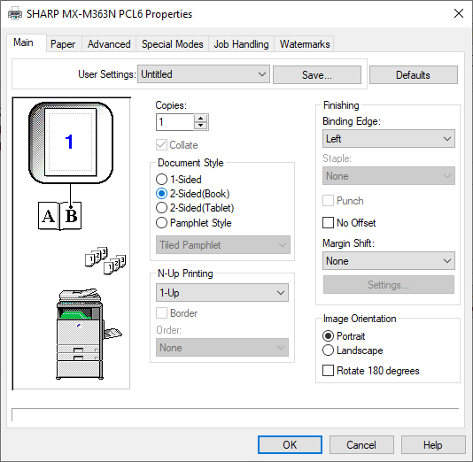
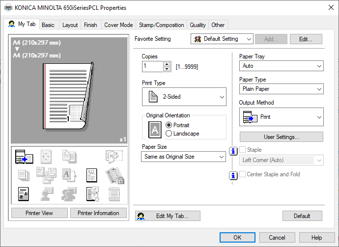
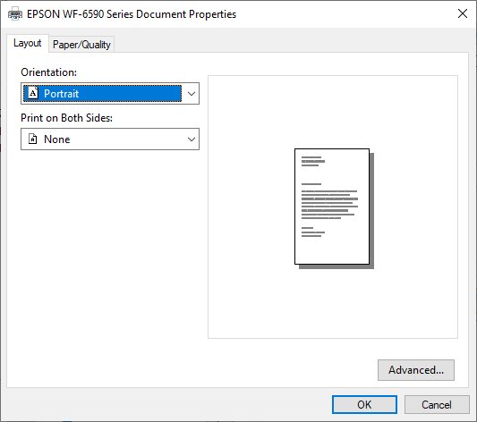

Πώς εκτυπώνουμε;
Σύντομη απάντηση
Μεταφέρουμε το αρχείο που θέλουμε να εκτυπώσουμε στον υπολογιστή της Α308.
Στέλνουμε το αρχείο για εκτύπωση σε έναν από τους τρεις διαθέσιμους εκτυπωτές (δύο φωτοτυπικά και ένας έγχρωμος).
Εκτενέστερη απάντηση
Το εκτυπωτικό δωμάτιο του Τμήματος είναι η Α308, όπου η πρόσβαση γίνεται με τις ίδιες κάρτες που χρησιμοποιούμε για την είσοδο στο κτίριο. Εκεί βρίσκεται ένας υπολογιστής μέσω του οποίου στέλνουμε εκτυπώσεις στα διαθέσιμα μηχανήματα. Υπάρχουν τρεις εκτυπωτές· δύο φωτοτυπικά –Sharp και Konica– και ένας έγχρωμος εκτυπωτής Epson.
Η διαδικασία εκτύπωσης έχει ως εξής:
«Στέλνουμε» ( βλ. παρακάτω) το αρχείο που θέλουμε να εκτυπώσουμε στον υπολογιστή της Α308. Για καλύτερα ελεγχόμενο αποτέλεσμα, συνιστάται να εκτυπώνουμε κυρίως αρχεία τύπου pdf.
Παίρνουμε χαρτί από τη γραμματεία.
Ανοίγουμε το αρχείο και πατάμε Ctrl-P ή επιλέγουμε File–>Print από το μενού του προγράμματος (η παρακάτω εικόνα αφορά στο Foxit Reader).
Εμφανίζεται το παράθυρο επιλογής εκτυπωτή. Πατάμε το πεδίο Name και εμφανίζονται οι επιλογές των εκτυπωτών. Επιλέγουμε ένα από τα «SHARP MX-M363N PCL6», «KONICA MINOLTA 650iSeriesPCL», «EPSON WF-6590 Series». Πατώντας «OK» φεύγει η εργασία εκτύπωσης προς τον εκτυπωτή που επιλέξαμε.
Αν θέλουμε να παραμετροποιήσουμε την εκτύπωσή μας (π.χ. εκτύπωση μονής όψης), πατάμε το κουμπί «Properties» και ανοίγει παράθυρο ειδικότερων επιλογών, το οποίο είναι διαφορετικό για κάθε εκτυπωτη. Στη συντριπτική πλειοψηφία των περιπτώσεων δε θα χρειαστεί αυτό το βήμα.
  
{kind=link}
{kind=link}
{kind=link}
{kind=link}
{kind=link}
Πώς «μεταφέρουμε» ένα αρχείο στον υπολογιστή της Α308
Η «μεταφορά» ενός αρχείου προς εκτύπωση μπορεί να γίνει εύκολα με πολλούς τρόπους:
Με τους ιδρυματικούς μας λογαριασμούς μέσω της υπηρεσίας μεταφοράς αρχείων του Πανεπιστημίου: https://uoctransfer.ict.uoc.gr
Με το OneDrive που μας παρέχεται ιδρυματικά μέσω της υπηρεσίας https://delos365.grnet.gr
Με απλή αποστολή email του αρχείου.
Με οποιαδήποτε υπηρεσία μεταφοράς αρχείων τύπου dropbox.
Σε κάθε περίπτωση μπορεί κάποιος να μεταφέρει το αρχείο του με ένα USB stick.